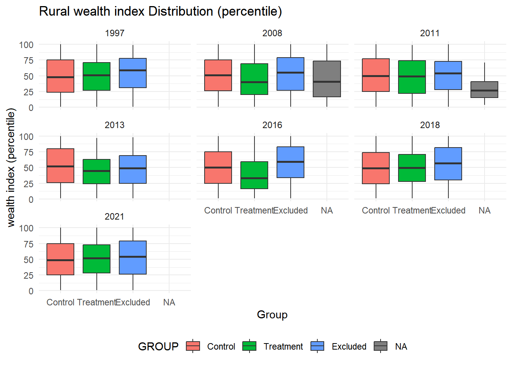
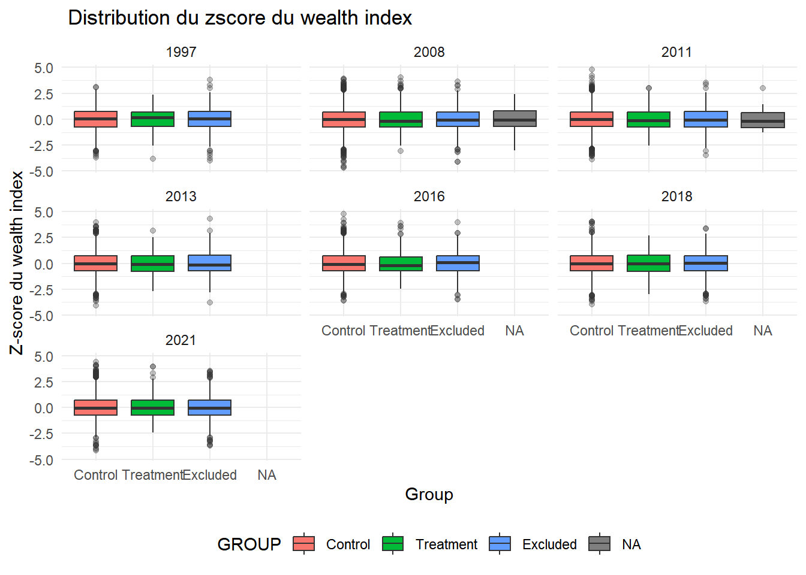

Cette section vise à effectuer l’analyse descriptive de l’étude.
7.1 Statistiques descriptive des aires protégées
Code
library(tidyverse) # Manipulation et visualisation des donnéeslibrary(writexl) # Pour faire une sortie sous Excellibrary(psych) # Pour des analyses statistiques descriptives et psychométrique library(knitr) # génération de rapports dynamiques library(sf) # Analyse spatialelibrary(readr)# On charge les données# NB : les CSV produits par 01 (wdpa_before_2008.csv / wdpa_from_2008.csv) ne# comportent plus les attributs de superficie et de nom (PA_AREA_KM2, NAME).# Les attributs des AP sont donc reconstruits depuis la même source que# 08-sensitivity-checks (dynamic_pa_fixed_last.gpkg + métadonnées WDPA) ; les# AP encore au statut "Proposed" (jamais officialisées pendant la période# d'étude) sont exclues, conformément à l'univers d'analyse de 01.pa_sf_desc <-st_read("data/PA_creation/wdpa_data/dynamic_pa_fixed_last.gpkg", quiet =TRUE) %>%mutate(WDPAID =as.character(WDPAID)) %>%left_join(read.csv("data/PA_creation/wdpa_data/dynamic_wdpa_metadata.csv") %>%mutate(WDPAID =as.character(WDPAID)),by ="WDPAID" ) %>%filter(is.na(STATUS) | STATUS !="Proposed")wdpa_before_2008 <- pa_sf_desc %>%filter(STATUS_YR <2008)wdpa_from_2008 <- pa_sf_desc %>%filter(STATUS_YR >=2008)# Fonction utilitaire pour produire les statistiques d'une périodeget_descriptive_stats <-function(data, periode_label) { pa_area_num <-as.numeric(data$PA_AREA_KM2) stats <- psych::describe(pa_area_num)[, c("n", "mean", "sd", "median", "min", "max")] min_name <- data %>%filter(pa_area_num ==min(pa_area_num, na.rm =TRUE)) %>%pull(NAME) %>%unique() %>%paste(collapse ="; ") max_name <- data %>%filter(pa_area_num ==max(pa_area_num, na.rm =TRUE)) %>%pull(NAME) %>%unique() %>%paste(collapse ="; ") stats %>%as_tibble() %>%mutate(periode = periode_label,aire_min = min_name,aire_max = max_name )}# Appliquer la fonction aux deux périodesdesc_AP_before <-get_descriptive_stats(wdpa_before_2008, "Before 2008")desc_AP_from <-get_descriptive_stats(wdpa_from_2008, "From 2008")# Fusion des deux tableauxdesc_AP_combined <-bind_rows(desc_AP_before, desc_AP_from) %>%arrange(mean) %>%select(periode, n, mean, sd, median, min, aire_min, max, aire_max)desc_AP_combined <-bind_rows(desc_AP_before, desc_AP_from) %>%arrange(mean) %>%select(periode, n, mean, sd, median, min, aire_min, max, aire_max) %>%rename(Period = periode,`Number of PAs`= n,`Mean (km²)`= mean,`Standard deviation (km²)`= sd,`Median (km²)`= median,`Minimum (km²)`= min,`Minimum PA`= aire_min,`Maximum (km²)`= max,`Maximum PA`= aire_max )# Affichage du tableau kable(desc_AP_combined, digits =2, caption ="Statistiques descriptives des aires protégées (PA_AREA_KM2)")
Statistiques descriptives des aires protégées (PA_AREA_KM2)
Period
Number of PAs
Mean (km²)
Standard deviation (km²)
Median (km²)
Minimum (km²)
Minimum PA
Maximum (km²)
Maximum PA
From 2008
54
540.73
1046.52
120.13
0.28
Nosy Antsoha
5692.47
Complexe des AP Ambohimirahavavy Marivorahona
Before 2008
64
677.80
946.68
260.85
2.25
Analalava
3722.54
Makira
Code
# Enregistrement du tableauwrite_csv(desc_AP_combined, "data/derived/tableau_descriptive des aires protégée.csv")# Fonction pour produire les 10 plus petites aires protégéesget_top_small_aires <-function(df, periode, top_n =10) { df %>%mutate(PA_AREA_KM2 =as.numeric(PA_AREA_KM2)) %>%arrange(PA_AREA_KM2) %>%slice_head(n = top_n) %>%mutate(rank_number =row_number(),periode = periode ) %>%select(rank_number, NAME, PA_AREA_KM2, periode) }# Appliquer aux deux périodestop10_before_2008 <-get_top_small_aires(wdpa_before_2008, "Before 2008")top10_from_2008 <-get_top_small_aires(wdpa_from_2008, "From 2008")# Fusionner les tableauxtop10_combined <-bind_rows(top10_before_2008, top10_from_2008)# Affichagekable(top10_combined, digits =2,caption ="Statistiques descriptives des aires protégées (REP_AREA) avec top 10 plus petites")
Statistiques descriptives des aires protégées (REP_AREA) avec top 10 plus petites
rank_number
NAME
PA_AREA_KM2
periode
geom
1
Analalava
2.25
Before 2008
MULTIPOLYGON (((49.44797 -1…
2
Forêt Naturel de Petriky
3.02
Before 2008
MULTIPOLYGON (((46.87618 -2…
3
Allées des Baobabs
3.21
Before 2008
MULTIPOLYGON (((44.4344 -20…
4
Mandena
4.37
Before 2008
MULTIPOLYGON (((46.9977 -24…
5
Nosy Mangabe
5.96
Before 2008
MULTIPOLYGON (((49.77407 -1…
6
Réserve de Tampolo
7.27
Before 2008
MULTIPOLYGON (((49.40779 -1…
7
Ambatoatsinanana
7.31
Before 2008
MULTIPOLYGON (((47.17534 -2…
8
Lokobe
8.46
Before 2008
MULTIPOLYGON (((48.31497 -1…
9
Analamazaotra
8.72
Before 2008
MULTIPOLYGON (((48.44098 -1…
10
Ambatotsirongorongo
10.29
Before 2008
MULTIPOLYGON (((46.7845 -25…
1
Nosy Antsoha
0.28
From 2008
MULTIPOLYGON (((47.96192 -1…
2
Andreba
0.39
From 2008
MULTIPOLYGON (((49.71009 -1…
3
Ampotaka Ankorabe
0.97
From 2008
MULTIPOLYGON (((48.03378 -1…
4
Ankafobe
1.32
From 2008
MULTIPOLYGON (((47.18597 -1…
5
Mahialambo
3.04
From 2008
MULTIPOLYGON (((48.209 -18….
6
Analabe-Betanatanana
3.58
From 2008
MULTIPOLYGON (((48.62782 -1…
7
Analalava
3.81
From 2008
MULTIPOLYGON (((48.63119 -1…
8
Ampanganandehibe-Behasina
5.80
From 2008
MULTIPOLYGON (((48.31317 -1…
9
Réserve spéciale Pointe à Larrée
7.70
From 2008
MULTIPOLYGON (((49.69757 -1…
10
Ankarabolava
7.72
From 2008
MULTIPOLYGON (((47.49909 -2…
Code
# Enregistrement du tableauwrite_csv(desc_AP_combined, "data/derived/tableau_descriptive_AP.csv")
7.2 Statistiques descriptives du wealth index et du z-score du wealth index
Cette partie présente les statistiques descriptives des variables de résultat par la production des tableaux de distribution et des boxplots par année.
Rappelons que:
Groupe de traitement: Ménages localisées dans les clusters à moins de 10 km des aires protégées créées à partir de 2008 dans les zones rurales
Groupe de contrôle: Ménages localisées dans les clusters à plus de 10 km des aires protégées créées à partir de 2008 dans les zones rurales
Groupe à exclure: Ménages localisées dans les clusters à moins de 10 km des aire protégées créées avant 2008 et dans la zone urbaine
Code
library(purrr)library(knitr)library(ggplot2)# Préparation des donnéescluster_classification <-read_csv("data/derived/cluster_treatment_classification_staggered.csv", show_col_types =FALSE) %>%select(DHSYEAR, DHSCLUST, GROUP)make_desc_wealth <-function(year){readRDS(paste0("data/derived/hh_", year, "_rural_simpler.rds")) %>%rename(DHSCLUST = hv001) %>%mutate(across(where(haven::is.labelled), haven::as_factor)) %>%left_join( cluster_classification %>%filter(DHSYEAR == year),by ="DHSCLUST" ) %>%mutate(DHSYEAR =year) }# Fonction générique: statistiques descriptives wealth_summary <-function(data, var, label){ data %>%group_by(GROUP) %>%summarise(n =sum(!is.na({{var}})),mean =mean({{var}}, na.rm =TRUE),sd =sd({{var}}, na.rm =TRUE),median =median({{var}}, na.rm =TRUE),p25 =quantile({{var}}, 0.25, na.rm =TRUE),p75 =quantile({{var}}, 0.75, na.rm =TRUE),min =min({{var}}, na.rm =TRUE),max =max({{var}}, na.rm =TRUE),.groups ="drop" ) %>%mutate(variable = label)}years <-c(1997, 2008, 2011, 2013, 2016, 2018, 2021)desc_all <-map_dfr(years, function(year){ hh <-make_desc_wealth(year)bind_rows(wealth_summary(hh, wealth_centile_rural_simple, "Wealth index (percentile)") ) %>%mutate(DHSYEAR = year)})kable( desc_all,caption ="Descriptive Statistics for the Rural wealth index rural by Group and by Year",digits =2)
Descriptive Statistics for the Rural wealth index rural by Group and by Year
GROUP
n
mean
sd
median
p25
p75
min
max
variable
DHSYEAR
Control
3699
49.21
29.15
48.0
24.00
75.00
1
100
Wealth index (percentile)
1997
Excluded
1090
54.16
28.25
59.0
31.00
78.00
1
99
Wealth index (percentile)
1997
Treatment
335
50.08
27.55
51.0
27.00
71.00
1
100
Wealth index (percentile)
1997
Control
9697
50.71
28.64
51.0
26.00
75.00
1
100
Wealth index (percentile)
2008
Excluded
2329
52.77
29.22
55.0
27.00
79.00
1
100
Wealth index (percentile)
2008
Treatment
1155
44.06
28.62
40.0
20.00
69.00
1
100
Wealth index (percentile)
2008
NA
183
44.87
30.68
41.0
16.50
73.50
1
100
Wealth index (percentile)
2008
Control
4617
50.50
29.43
50.0
25.00
77.00
1
100
Wealth index (percentile)
2011
Excluded
939
51.06
26.25
54.0
28.00
73.00
1
100
Wealth index (percentile)
2011
Treatment
441
48.59
28.92
49.0
22.00
74.00
1
99
Wealth index (percentile)
2011
NA
28
28.14
16.29
26.5
15.00
40.75
4
71
Wealth index (percentile)
2011
Control
4455
52.25
30.00
52.0
26.00
80.00
1
100
Wealth index (percentile)
2013
Excluded
1196
46.99
26.10
49.0
25.00
69.00
1
98
Wealth index (percentile)
2013
Treatment
724
44.25
24.04
45.0
24.00
63.00
1
97
Wealth index (percentile)
2013
Control
7170
50.20
28.71
50.0
25.00
75.00
1
100
Wealth index (percentile)
2016
Excluded
1488
57.10
28.54
59.0
34.00
83.00
1
100
Wealth index (percentile)
2016
Treatment
637
38.11
26.69
33.0
16.00
59.00
1
100
Wealth index (percentile)
2016
Control
10731
49.50
28.90
49.0
24.00
74.00
1
100
Wealth index (percentile)
2018
Excluded
2496
54.76
29.54
57.0
30.00
82.00
1
100
Wealth index (percentile)
2018
Treatment
1194
49.86
26.47
49.5
28.00
71.00
1
100
Wealth index (percentile)
2018
Control
10737
49.88
28.88
49.0
25.00
75.00
1
100
Wealth index (percentile)
2021
Excluded
3026
52.32
29.56
54.0
26.25
79.00
1
100
Wealth index (percentile)
2021
Treatment
1601
50.52
27.14
52.0
28.00
73.00
1
100
Wealth index (percentile)
2021
Code
wealth_plot_data <-map_dfr(years, make_desc_wealth) %>%mutate(DHSYEAR =factor(DHSYEAR),GROUP =factor(GROUP, levels =c("Control", "Treatment", "Excluded")) )# Boxplots - Wealth index en centileggplot(wealth_plot_data,aes(x = GROUP, y = wealth_centile_rural_simple, fill = GROUP)) +geom_boxplot(outlier.alpha =0.3) +facet_wrap(~ DHSYEAR) +labs(title ="Rural wealth index Distribution (percentile)",x ="Group",y ="wealth index (percentile)" ) +theme_minimal() +theme(legend.position ="bottom")

Code
# Box plot - z-score wealth index en centileggplot(wealth_plot_data, aes(x = GROUP, y = zscore_wealth, fill = GROUP)) +geom_boxplot(outlier.alpha =0.3) +facet_wrap(~ DHSYEAR) +labs(title =" Distribution du zscore du wealth index",x ="Group",y ="Z-score du wealth index" ) +theme_minimal() +theme(legend.position ="bottom")

Pour chaque année, nous présentons les distributions du wealth index en centile et son z-score, qui diffèrent selon le groupe: traitement, contrôle et exclu.
Sur l’ensemble de la période d’étude, le groupe exclu se trouve dans la partie supérieure de la distribution nationale de richesse avec une moyenne nettement supérieure à 50 et une médiane entre 63 et 77. Sa distribution est globalement décalée vers le haut (p25 élevé). En revanche, les groupes contrôles et traitement présentent des profils de richesse très proches, avec des moyennes comprises entre 47 et 50 et des médianes allant de 46 à 51. Cela suggère qu’il n’existe pas de différence entre les groupes, néanmoins, les écart-types des deux groupes indiquent une forte hétérogénéité des niveaux de vie.
7.3 Statistiques descriptives des variables utilisées dans le modèle